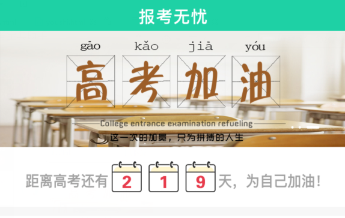

高考无忧填报小助手，轻轻松松解决填报难题
您还在为选择哪所高校，哪个专业担忧吗。
您还在担心选不上您想要报考的院校吗。
现在这些都不是问题，《高考报考宝典》能够祝您选择好的院校，好的专业
所需的条件非常简单，只需要您的高考分数，我们就能帮你分析，祝您选择您所想要报考的学校、专业
还在等什么，赶快拿起手机下载《高考报考宝典》吧！
《高考报考宝典》来了，那么问题就解决了
下载《高考报考宝典》，轻轻松松解决您的问题
您在担心《高考报考宝典》是否能帮到您和您的孩子还有疑虑，那么请往下看
面对即将面临高考的家庭来说，孩子的成绩能上哪所高校是一件大事。在高考前夕，家长们一直担心受怕着。
现在您只需要提供您孩纸的模拟成绩，我们就能助您选择这个分数能够上那些大学，能够上那些好的专业
我们根据这个模拟成绩，通过与往年的大量数据分析与统计，为您提供 弃、冲、稳、保4个阶段的各个院校以及专业